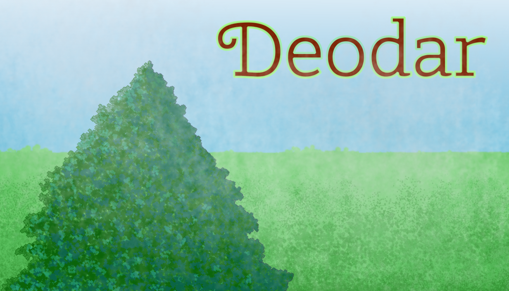

DEODAR
A non-violent 2D platformer for Steam
This is my first complete and polished video game. It is coming to Steam on July 15th, 2025 for Linux and Windows.
Technologies utilized:
- Game logic built using the Godot game engine's GDscript
- I chose Godot because it runs well on Linux, my operating system of choice, and the node-based structure is very intuitive
- I chose to use GDscript because this language was designed specifically for Godot and my familiarity with Python
- Steam integration achieved through GodotSteam
- I am releasing on Steam to maximize my potential audience, and GodotSteam is the most mature tool for achieving this
- Visual assets and animations created using LibreSprite, GIMP, and Inkscape
- I chose these programs largely because I was already familiar with them from other design and development projects
- Sound effects created with https://sfxr.me/ and VCV Rack and Audacity
- I used sfxr primarily for inspiration as it is very easy to generate a number of sound samples for retro-style games
- I chose VCV Rack to create sound effects because it allows me to freely explore all of the sound design potential of modular synths
- Audacity was a natural choice because I only needed to do some simple track editing for my sound design
- Music created with VCV Rack and Audacity
- I chose VCV Rack in order to make atomospheric ambient music to set the mood for the game world
- I have been using Audacity to record and edit music since 2010, so this was a simple choice
- Version control with git
- I chose git because of version control is a critical element of any project, and I have been using it for a decade